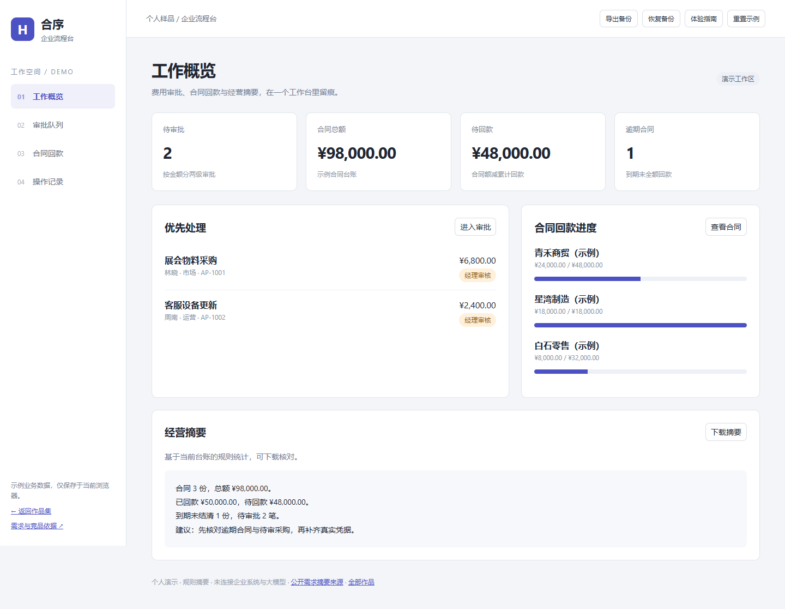
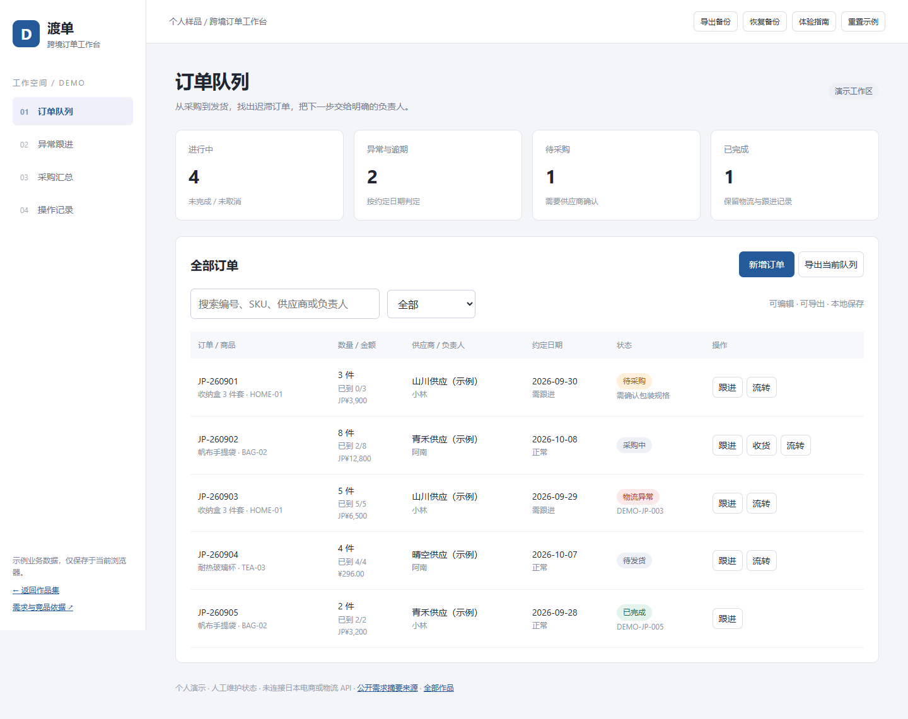
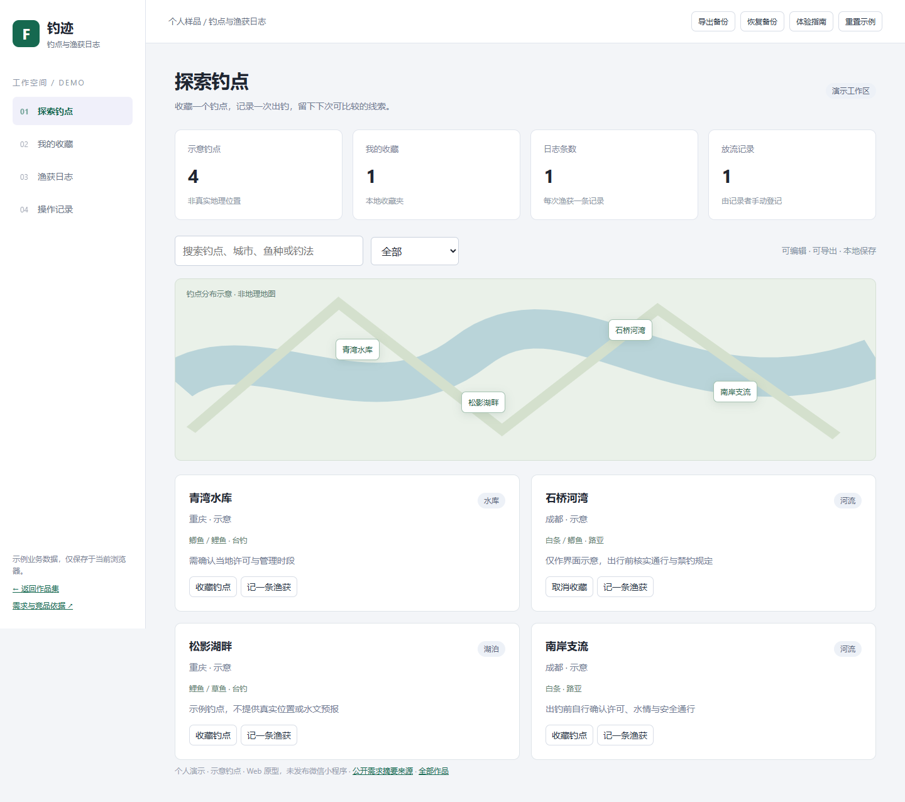
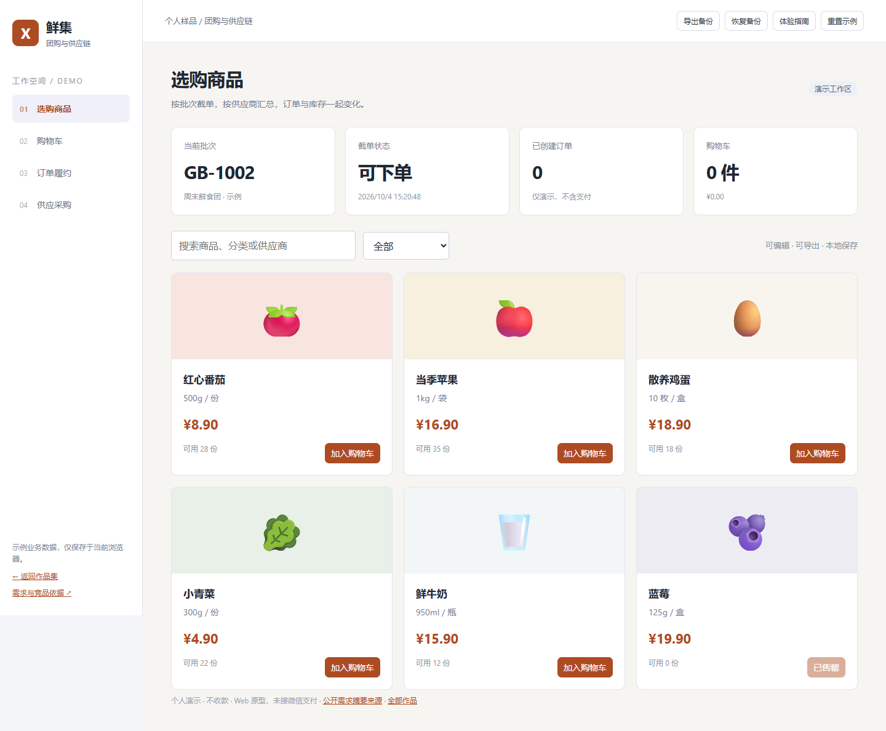
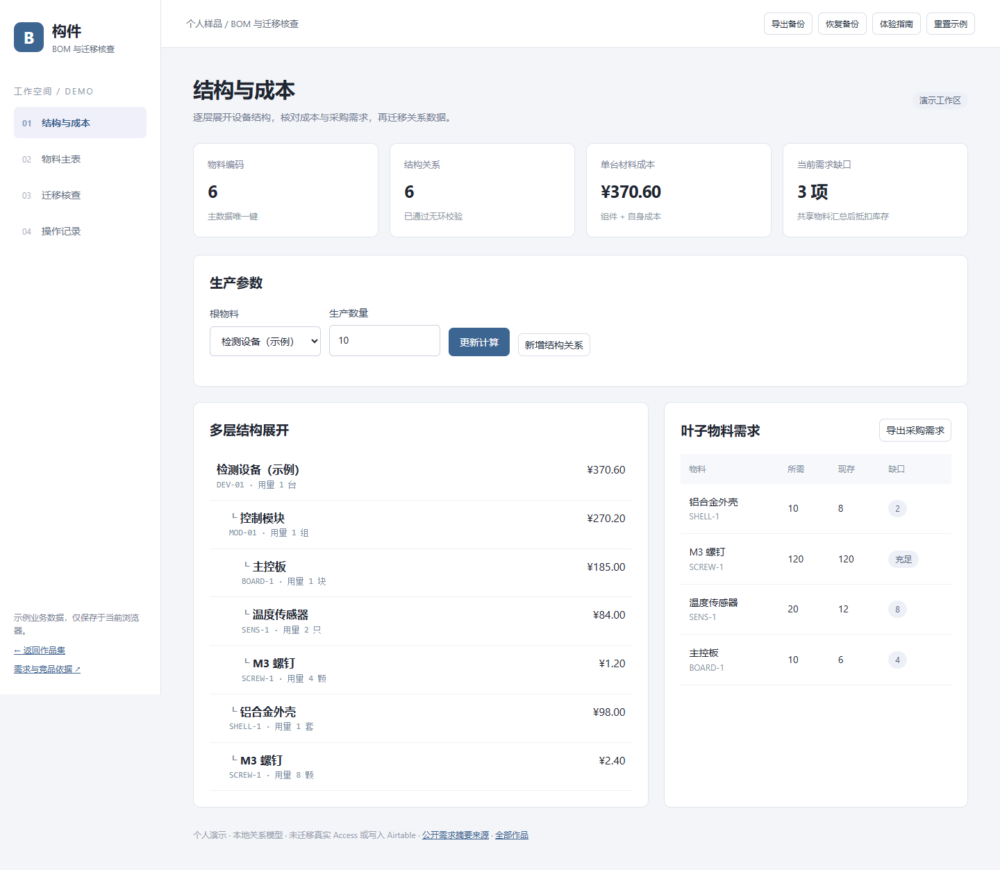
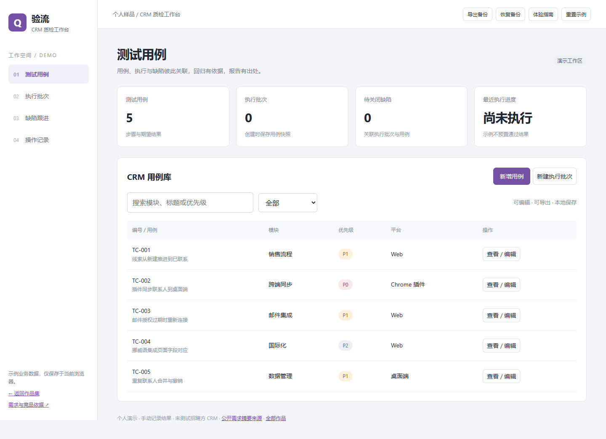

FUYOUPENG2007 / PERSONAL WORK SAMPLES / 2026.10
九个作品，打开就能体验。
从一张经营报表到一条订单流程，从交互原型到商品选择。用可操作的个人样品展示思路，附源码、需求依据和验证记录。








先体验一条流程
渡单：采购中订单登记部分到货，再尝试进入待发货。合序：处理超过 5000 元的申请，观察转财务。鲜集：下单后取消，查看库存恢复。构件：尝试新增循环关系。验流：记录失败，再回归通过后关闭缺陷。
下载与查看
九个项目都有源码和说明。Excel、WordPress 配套与之前的三套样品仍可下载。
Excel 模板WordPress 子主题九项目交付包作品说明
自主制作、AI 协作开发、虚构业务数据。来源是电鸭公开摘要，未确认仍在招聘。Web 小程序样品未发布微信，原型未接生产系统。新工作台记录存于当前浏览器，可备份恢复。
逐项范围与来源测试证据